Our Vision
Excellence in this world and the world hereafter.
Run by Real Education Network (Pvt) Ltd. — Idara Farogh-e-Taleem. Motto: “Excellence in this world and the world hereafter.” Tagline: “Gateway to Greatness.”
“Give respect to your children and provide them with good education and training.” — Sunan-e-Abi Daud

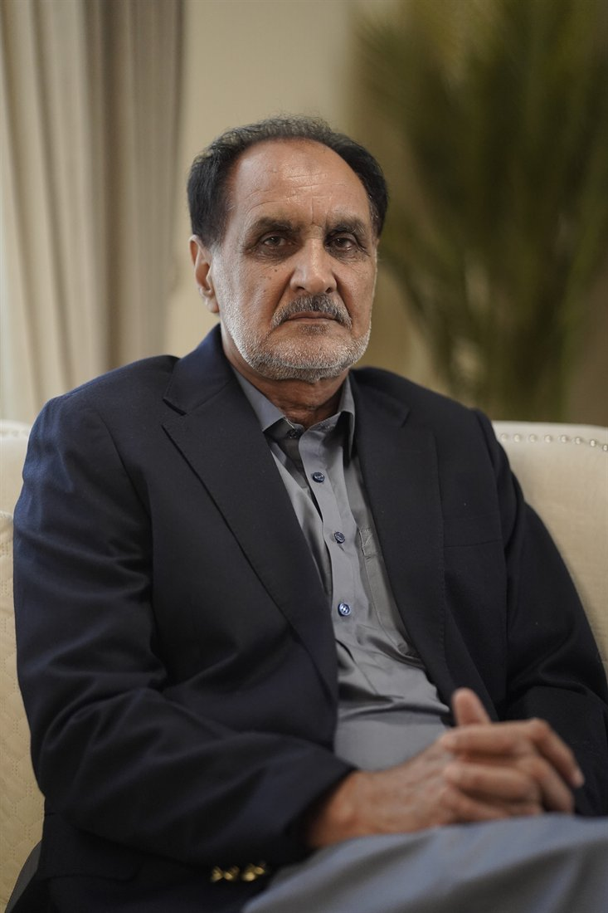
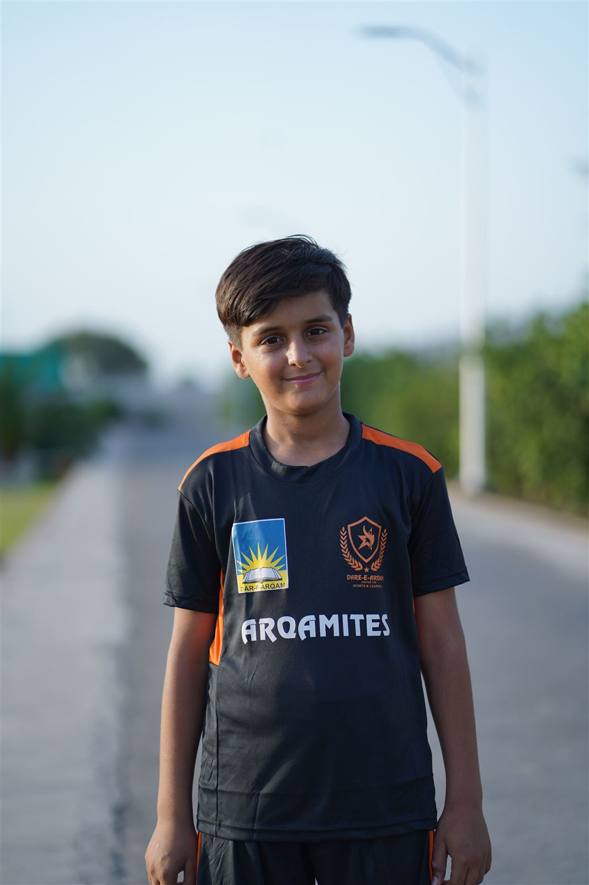
The guiding principles that shape every classroom, every value, and every child at Dar-e-Arqam.
Excellence in this world and the world hereafter.
To provide our students education of the highest quality, groom their personality and inculcate in them a sense of responsibility, confidence, commitment & dedication towards their society & country to the national & international standards.
We are committed to our mission and making concerted efforts to value and strengthen human dignity through our system of education.
Dar-e-Arqam System of Education stands out distinctively with its focus on morality and academics with a balanced approach.
We impart education with the spirit to evolve leadership that guides and commands the nation excellently, with Islamic norms of life.
Our aim is to develop a deep sense of responsibility, moral courage and complete harmony in action and thought leading to a balanced personality.
Dar-e-Arqam Education System is based on mutual respect and believes in the universal equality of all human beings.
Our system of education envisages civic sense and fellow feeling, transforming students into fine citizens of Pakistan.
A masterpiece combination of Islamic and worldly knowledge, implemented in a practical, everyday form.
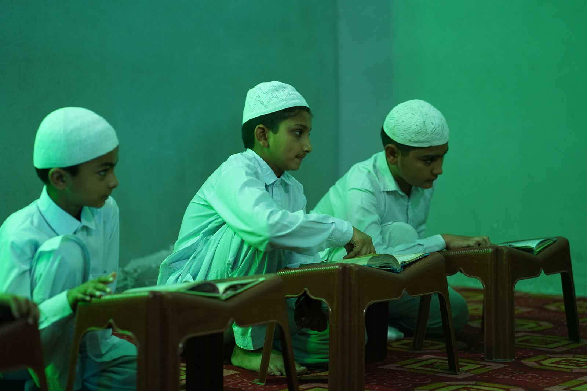
Dar-e-Arqam is the trailblazer of launching the Hifz class with a view to give an over-riding status to the noble practice of committing the Holy Quran to memory. The Hifz class enjoys a VIP status with well-furnished classes.
These students will be an undeniable source of divine blessings for us, and salvation for their parents as well, on the Day of Judgement.
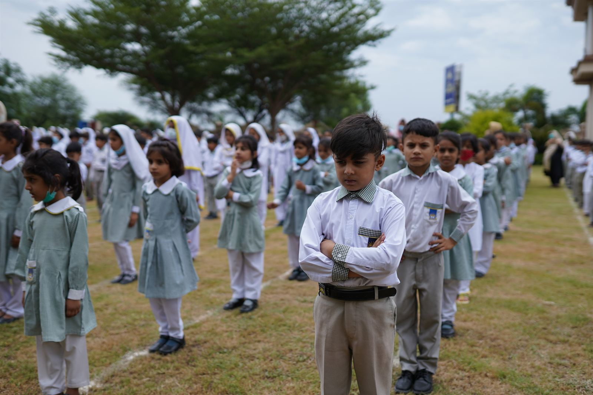
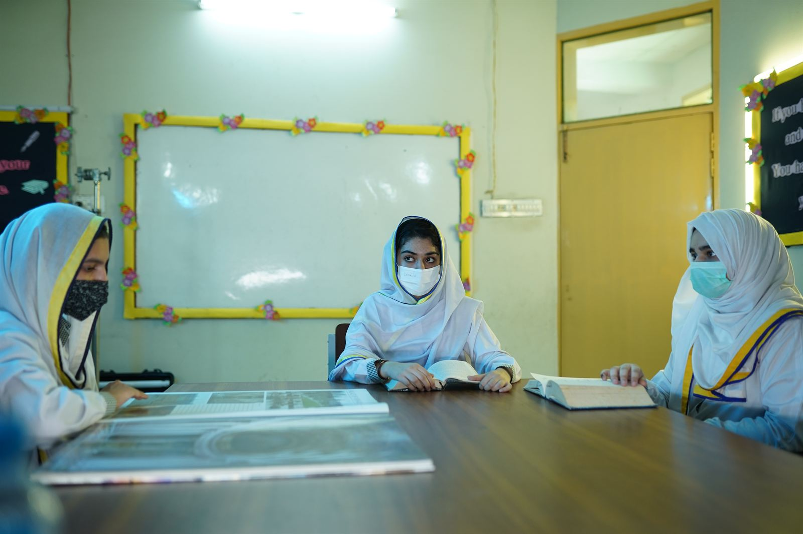
Special arrangements have been made for the proper teaching of Nazra Quran for all students, simultaneously with general education. Studies begin from the Nursery class and are completed by Class Six.
Fehm-e-Quran and Seerat-un-Nabi ﷺ classes are held frequently in the Holy Month of Ramadan and throughout the year, with a view to disseminate religious enlightenment.
Every facility at Dar-e-Arqam is designed to support learning, faith and personal growth side by side.
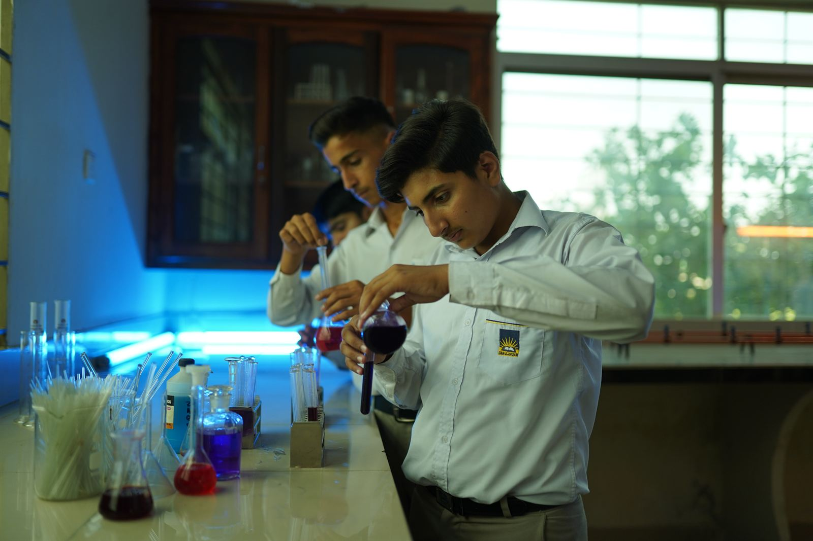
Science Laboratory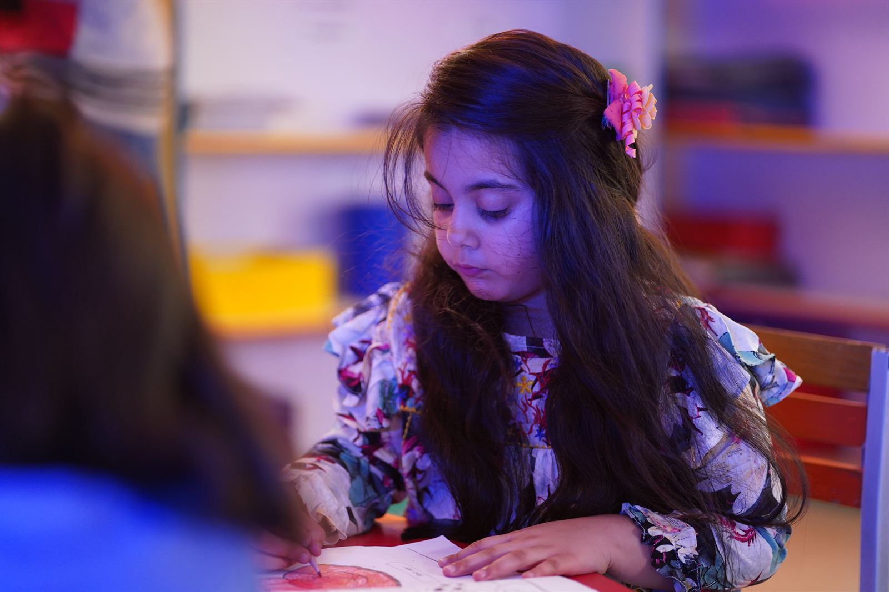
Nursery & Montessori Wing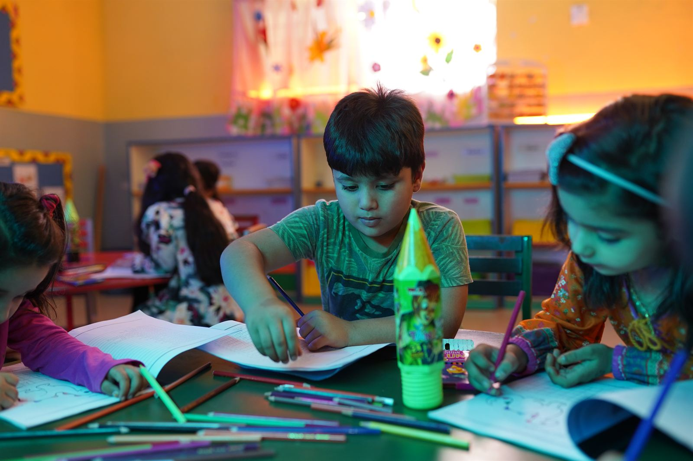
Classroom Learning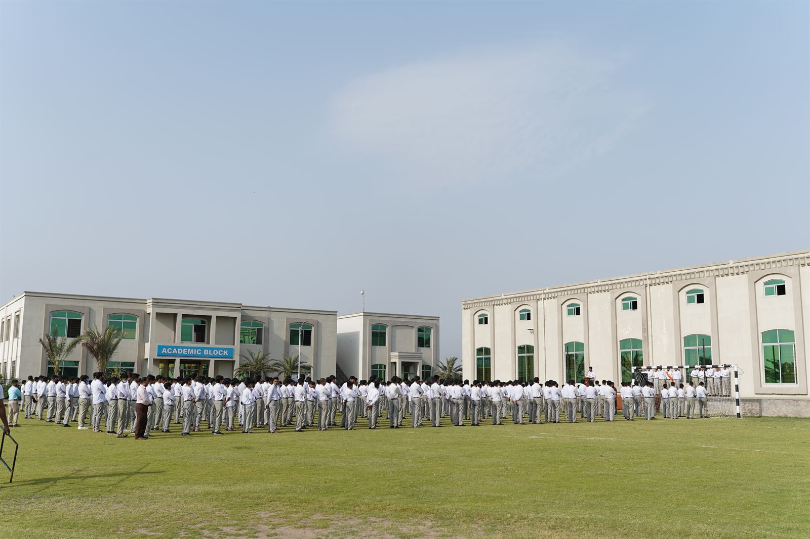
Mukabbir Campus Morning Assembly
Morning Assembly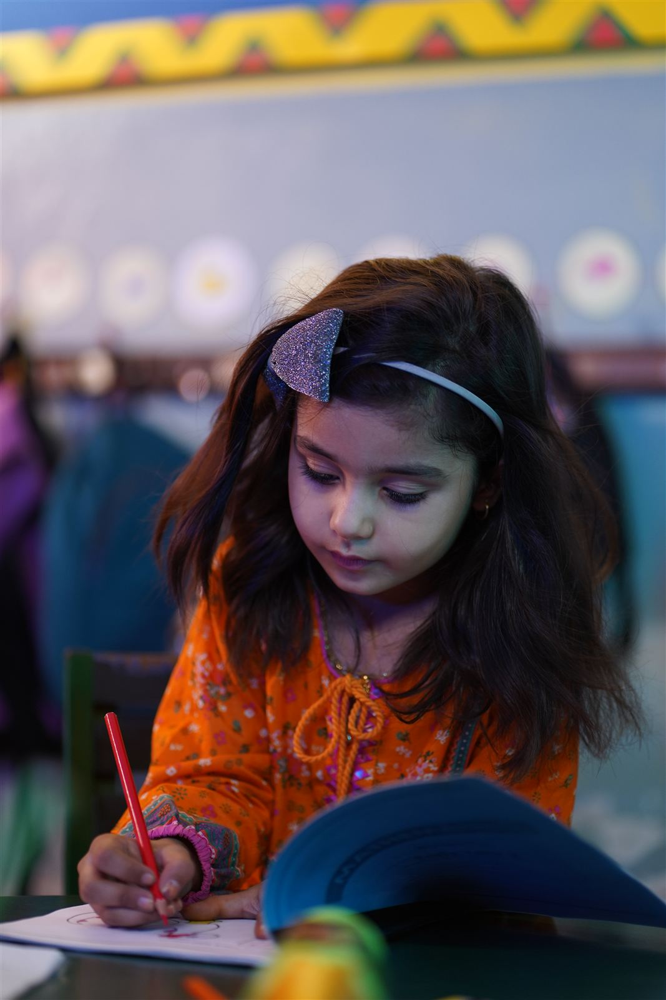
Campus BuildingDar-e-Arqam has full-fledged libraries where students study books of their own choice, with a collection covering syllabus, literature, general knowledge, science and IT — broadening the horizons of their knowledge.
Practicals lend credence to theoretical knowledge. We maintain well-equipped science laboratories with all necessary infrastructure for practical work in science subjects.
Teachers and students are made computer literate to come abreast with the rest of the world. All Dar-e-Arqam campuses have computer labs facilitating both students and staff.
A homely Nursery atmosphere eases the transition from home to school, with special emphasis on Islamic manners. Montessori students receive educational aids like models, videos and projectors.
“The real end of body is physical fitness.” Competitions in cricket, football, badminton, tug of war, table tennis, volleyball and athletics are arranged for boys and girls, climaxing on Annual Sports Day.
Our R&D team works year-round to modernize the syllabus — a masterpiece combination of Islamic and worldly knowledge, with both Urdu and English medium available at secondary level.
Co-curricular activities play an equally important role in shaping a well-balanced personality.
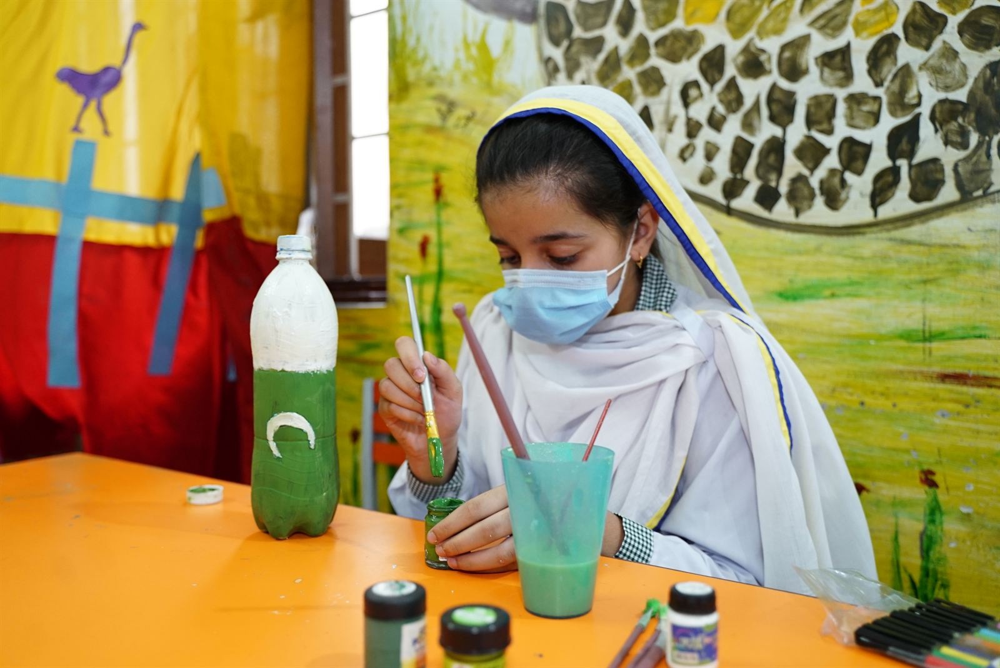
Once a YearScience is how we satisfy our curiosity. Dar-e-Arqam celebrates this annual exhibition, with prizes distributed to students of extraordinary performance.
Education isn't confined to the classroom. We manage outing and educational trips for every class, keeping in view their age, taste and environment.
Mutual co-operation and vigilance of parents play a vital role in a child's education. These meetings keep parents informed of their children's progress.
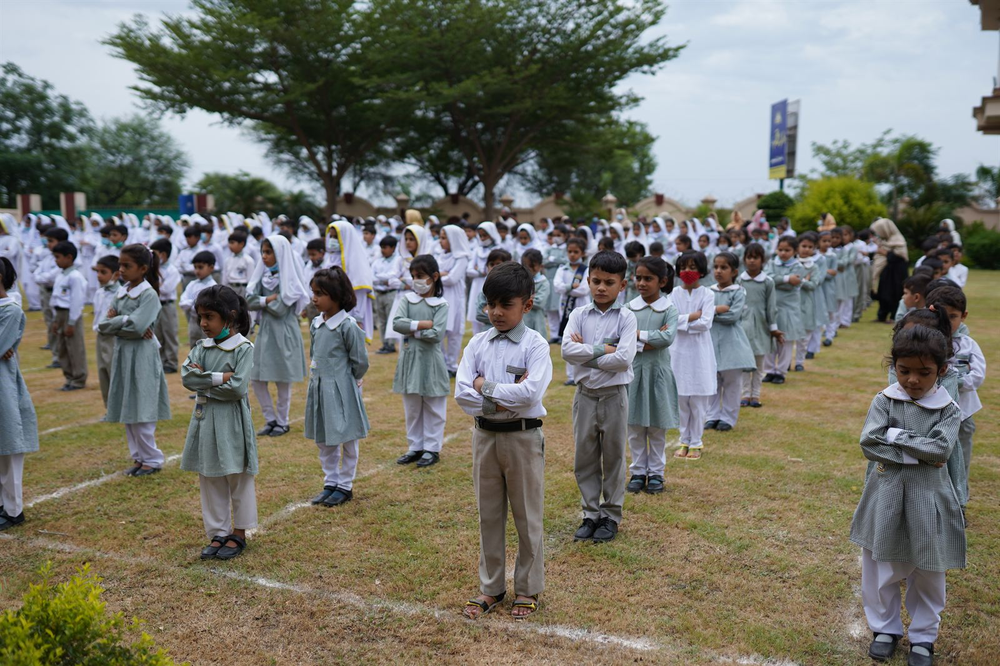
Leadership · Ujala · HufazDar-e-Arqam arranges special camps — Leadership camp, Ujala camp and Talented Hufaz camp — for boys and girls, to train youth in Islamic values and culture.
“The more the games are, the better the spirit of expressions pours out.” Different coloured kits fuel passion and sportsman spirit among students — climaxing every year on Annual Sports Day.
From the first Islamic institution in Makkah to a growing network across the Gujrat Region.
A few followers gathered at the first-ever Islamic institution established by the Holy Prophet ﷺ, in the house of Hazrat Arqam Bin Abi Al-Arqam Makhzoumi (RA), in the lap of Mount Safa in Makkah. This cherished house became known as Dar-e-Arqam and played a vital role in spreading the message of Islam.
The second Caliph of Islam, Hazrat Umar Farooq (RA), embraced Islam at this very house. The name Dar-e-Arqam was chosen with a commitment to enlighten the hearts and minds of coming generations with the eternal message of Islam, alongside modern education.
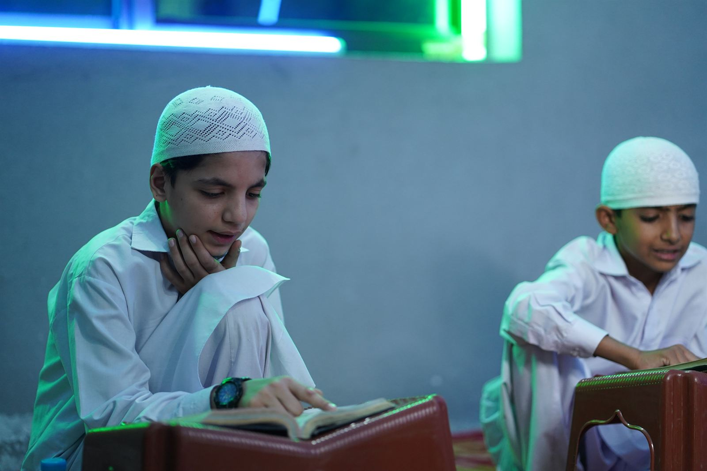
The purpose of education is to enable mankind to know itself and pave the right way for its life. Allah, the Almighty, emphasizes the importance of education by starting revelation with the word “Iqra” (Read) — and the Holy Prophet ﷺ was sent as a teacher.
Run by Real Education Network (Pvt) Ltd. — Idara Farogh-e-Taleem, our branches now span Abubakar, City, Kharian, Mandi Baha-ud-Din, Lalamusa, Fatima, Malakwal, Jalal Pur Jattan, Ayesha, Phalia, Tanda, Umer, Kunjah, Usman, Sarai Alamgir, Kotla Arab Ali Khan, Ali and Shadiwal campuses — and beyond, to Mirpur (AJK).
A residential campus was launched at Bhimber Road, Gujrat — spread over forty Kanals, with library, science laboratories, computer & IT labs, a modern gym, and vast parks and flower-belts. One and only example of excellent high schooling in Gujranwala division.
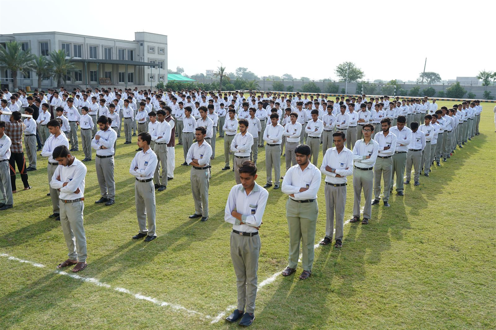
In the 2018–19 Matric results, 107 students scored above 1000 marks, 295 achieved A+ grade, and 501 stood in 1st Division. 101 students completed their Hifz-ul-Quran in 2018, followed by 67 more in 2019.
With Cambridge O-Level students achieving 5 A-stars and a network striving for excellence in this world and the hereafter, Dar-e-Arqam Schools, Gujrat Region continues its journey onward — a true Gateway to Greatness.